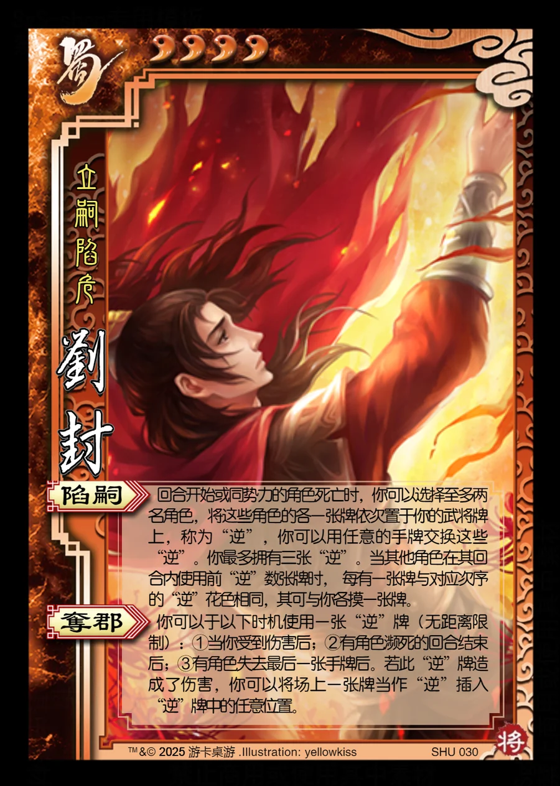

点击卡面查看大图
蜀
刘封
♥4立嗣陷危
陷嗣
回合开始或同势力的角色死亡时，你可以选择至多两名角色，将这些角色的各一张牌依次置于你的武将牌上，称为“逆”，你可以用任意的手牌交换这些“逆”。你最多拥有三张“逆”。当其他角色在其回合内使用前“逆”数张牌时， 每有一张牌与对应次序的“逆”花色相同，其可与你各摸一张牌。
夺郡
你可以于以下时机使用一张“逆”牌（无距离限制）：①当你受到伤害后；②有角色濒死的回合结束后；③有角色失去最后一张手牌后。若此“逆”牌造成了伤害，你可以将场上一张牌当作“逆”插入“逆”牌中的任意位置。